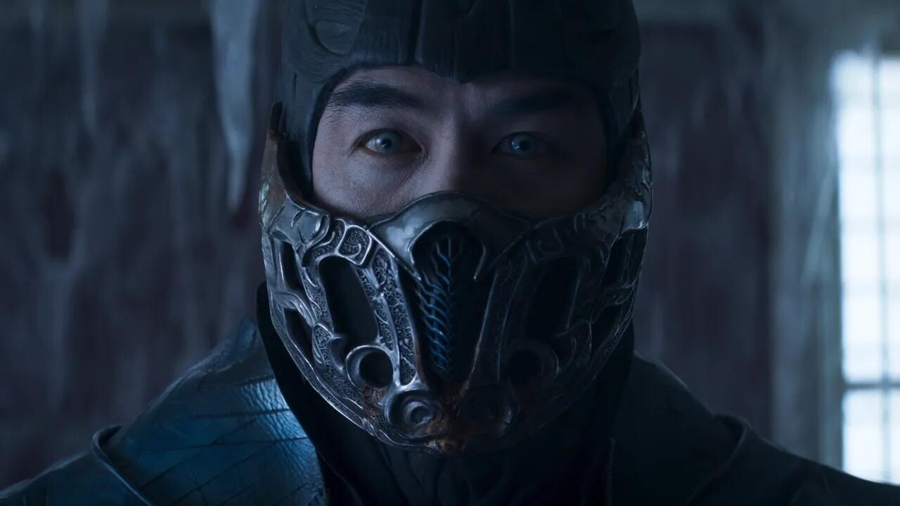

Desde que la industria internacional posase su mirada sobre ellas en la primera mitad de la década de los 90 y comenzasen a proliferar de forma exponencial hasta nuestros días, las adaptaciones del videojuego a la gran pantalla, salvo honrosas excepciones, siempre han estado asociadas a productos de dudosa calidad técnica y artística; una constante especialmente notoria en lo que respecta a los live action basados en juegos de lucha.

Todo este cóctel referencial se ha trasladado a la pantalla con una forma que, salvo puntuales excesos digitales, luce a las mil maravillas. El notable trabajo del director de fotografía Germain McMicking —'True Detective 3'—, combinado con el trabajo de cámara y puesta en escena de McQuoid —sorprendente teniendo en cuenta que se trata de una debut—, se traduce en unas escenas de combate tan vistosas, contundentes y salvajes como cabría esperar, y en una variedad de códigos que no teme en coquetear con el terror en algunos momentos y que no escatima en sangre y vísceras.
Simon McQuoid